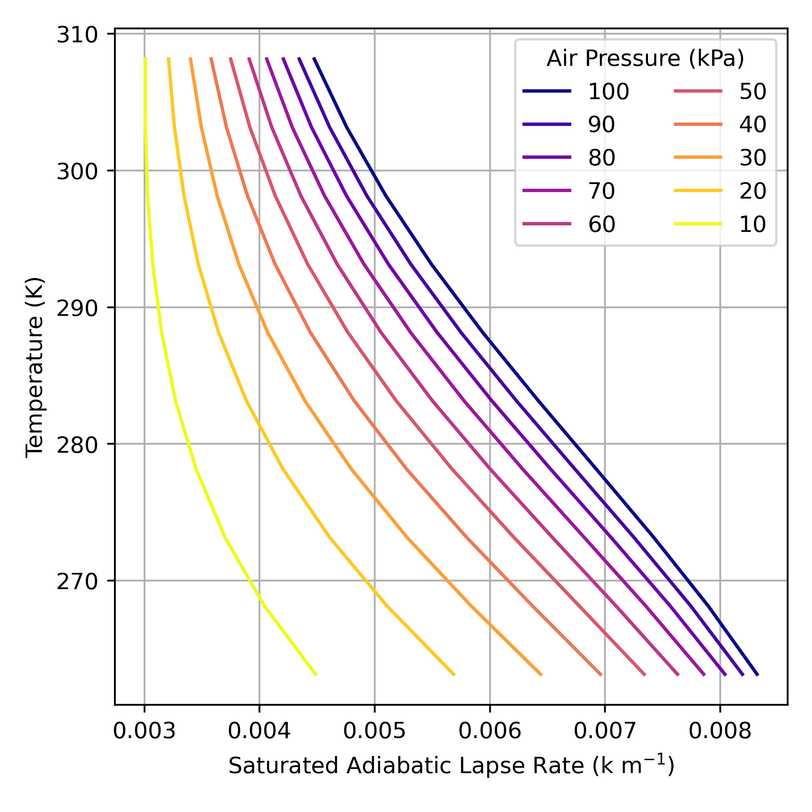
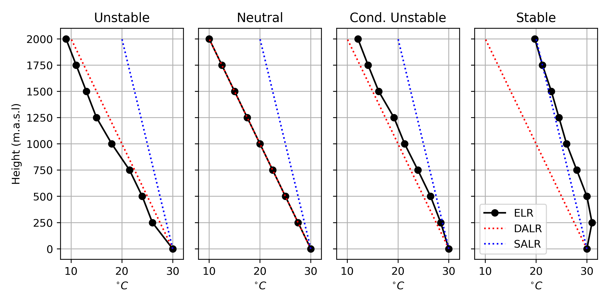

| Symbol | Name | Definition |
|---|---|---|
| \(z\) | Vertical position | Relative to Earth’s surface (height or depth) unless otherwise specified |
| ELR | Environmental Lapse Rate | Observed change in air temperature with height |
| DALR | Dry Adiabatic Lapse Rate | 0.01 \(K m^{-1}\) |
| SALR | Saturated Adiabatic Lapse Rate | 0.006 \(K m^{-1}\) |
Lab 4: Vertical Structure of the Atmosphere
This assignment is worth 14 points.
Objectives
- Understand the concept related to the vertical structure of the atmosphere, in particular, how temperature changes with height
- Understand the different types of lapse rates
- Environmental lapse rate (ELR)
- Dry adiabatic lapse rate (DALR)
- Saturated adiabatic lapse rate (SALR)
- Understand and concept of static stability and distinguish between different types of stability within a particular air layer
1 Theory
Weather Balloons
Our understanding of the vertical structure of Earth’s atmosphere has been informed by over a century of weather balloon launches Figure 1. Modern balloons carry sensors to measure temperature, humidity, and air pressure along with a radiosonde which transmits data back to a station on the ground. The balloons record data as they ascend through the atmosphere, giving us a profile of temperature, humidity, and air pressure. Some balloons are also tracked by GPS, which allows wind speed and direction to be calculated as well. Eventually, the balloon pops and it’s transmitter returns to earth via a parachute. Modern balloons regularly reach heights exceeding 30,000 meters above sea level (m.a.s.l); for reference, commercial aircraft fly between 9,000 and 13,000 m.a.s.l
Figure 2 shows a web map weather balloon stations that are part the Integrated Global Radiosonde Archive network. Take a moment to look around the map; note the spatial distribution of stations across Earth’s surface. These data are an important component of weather forecasts as they give us information the current state of the upper atmosphere. They are also used to help validate satellite data products, and historical balloon records are use to train global climate models. Balloon launches at most stations are conducted twice daily at 0:00 UTC and 12:00 UTC. Launch times are kept consistent across the globe by using (UTC time)[https://en.wikipedia.org/wiki/Coordinated_Universal_Time] instead of the local time. This is important for standardizing observations so they can be included in global climate models. If you ever need to convert between UTC time and local time, you can use this tool to help.
Atmospheric Pressure
The atmosphere is a compressible gas; i.e., air is compressed by the weight (pressure) of the air above it. Therefore, density (\(\rho\)) and air pressure (\(P\)) decrease with increasing height above the sea level (Figure 3). Note how \(P\) decreases steadily with height, from just over 100 kPa at sea level to less than 10 kPa at 20,000 meters above sea level (m.a.s.l). Air pressure always decreases with height, because air pressure is a function of the weight of air above a measurement location. As you move upwards through the atmosphere, the weight of the air above you decreases, so there is less pressure (compressional force) exerted by the remaining air above you and the density of the air decrease. Near Earth’s surface, the decrease is approximately linear (\(\approx\) -0.012 kPa m-1), but the rate of change decrease at higher elevations.
The relationship between pressure and density is given by the Ideal Gas Law Equation 1. Recall the notation from Lab 3: pressure (\(P\)), volume (\(V\)), temperature (\(T\)), and the amount of the gas (\(n\)) in moles; with \(R\) being the ideal gas constant (see Table 1). The amount in moles of a given gas (or mixture of gasses) can be defined as \(n = \frac{m}{M}\), where \(m\) is the mass of the substance (in kg or g) and \(M\) is the Molar mass (in kg mol-1 or g mol-1) respectively.
\[ PV=nRT \tag{1}\]
PV=RTm/M
You may have noticed this phenomena if you’ve ever been to the top of a tall mountain. Since the atmosphere is less dense on top of a tall mountain, there is less oxygen available with each, and your body has to breathe more heavily to compensate. You probably also noticed that it was cooler atop the mountain. Looking at Equation 1, we can see that a decrease in \(P\) can also lead to a decrease in \(T\).

Lapse Rates
As a consequence of the ideal gas law, when an air parcel is lifted upwards though the atmosphere, its temperate will decrease in correspondence with the decrease in air pressure. Conversely, when a parcel of air sinks its temperature will increase in correspondence with the increase in pressure. This phenomena is known as an adiabatic process: where temperature of a substance changes without the addition/subtraction of energy. When thinking about adiabatic processes, we assume a parcel does not mix with the environment. In reality, this assumption is never perfectly met, but it applies well enough when dealing with large parcels of air.
Adiabatic Lapse Rates
The rate at which the parcel will cool depends on whether or not it is saturated. Why? Because the amount of water the atmosphere can hold is a function of temperature. In order for a parcel to cool below its dewpoint water vapor must condense, and the process of condensation releases heat to the surrounding environment.
The dry adiabatic lapse rate (DALR) applies when a parcel of air is not saturated, and has a constant with a value of \(\pm\) 0.01 K m-1. The DALR will be negative (cooling) if a parcel is being lifted upwards and will be positive (warming) for a parcel that is descending.
The saturated adiabatic lapse rate (SALR) applies once a parcel of air reaches saturation. A saturated parcel still cools as it rises but condensation also occurs which releases latent heat and counteracts some of the cooling. It important to note that the SALR only applies to cooling air, when air warms it will always do so at the DALR, because as soon as the air begins to warm, it will no longer be saturated.
The actual value of the SALR is non-linear function of \(T\) and \(P\); it is shown for selected values of \(T\) and \(P\) in Figure 4. Calculating the exact value of the SALR is complex because:
- \(T\) varies as a function of \(P\)
- The latent heat released by condensation varies as a function of \(T\)
- The amount of water that must condense for a parcel to cool also varies as a function of \(T\)
While the SALR is not constant you will can see from Figure 4 that changes in \(T\) and \(P\) have opposing effects on the SALR. A decrease in \(T\) increases the SALR while a decrease in \(P\) will decrease SALR. Given this, we can assume a constant SALR of 0.005 K m-1 to perform reasonably accurate approximations.

Environmental Laps Rate
The observed rate of change of \(T\) with height at a given location know the environmental lapse rate (ELR). We can determine the ELR directly from weather balloon data or estimate it from weather forecast models. The ELR rate varies drastically between locations, heights, and times. It can be calculated between any two heights in a balloon profile using Equation 2. A positive ELR indicates that \(T\) increases with height whereas a negative ELR indicates \(T\) it decreases with height.
\[ ELR = \frac{T_{z_2}-T_{z_1}}{z_2-z_1} \tag{2}\]
Figure 5 and Table 2 show an example atmospheric temperature profile. Note how \(T\) tends to decrease with height but does do not always decrease as a function of height. A temperature inversion occurs when warmer air is found above cooler air. In Figure 5, there is a strong temperature inversions present near the surface. This is a common occurrence on calm clear nights when radiative cooling (\(LW\) emissions) at the Earth’s surface cause air near the surface to cool more than air above the surface. You will also note there is a temperature inversion around 12,500 m.a.s.l. This is known as the tropopause; the boundary between the troposphere and the stratosphere (we’ll discuss this distinction in lecture).

| Height (m.a.s.l) | ELR K/m | |
|---|---|---|
| 1 | 17 | – |
| 2 | 271 | 0.0154 |
| 3 | 904 | -0.0013 |
| 4 | 1592 | 0.0061 |
| 5 | 3172 | -0.0038 |
| 6 | 5790 | -0.0066 |
| 7 | 7430 | -0.0083 |
| 8 | 9410 | -0.0074 |
| 9 | 10600 | -0.0091 |
| 10 | 11990 | -0.0075 |
| 11 | 12165 | -0.0057 |
| 12 | 13740 | 0.0015 |
| 13 | 16230 | 0.0006 |
| 14 | 18440 | 0.0006 |
| 15 | 20510 | -0.0006 |
| 16 | 23660 | -0.0005 |
Atmospheric Stability
You’ve probably heard that “hot air rises”. All else equal, when air is warmer than it’s surrounding environment, it has a tendency to expand; following Equation 1 \(V\) will increase, making the air less dense than its surroundings. You can assess the stability of the atmosphere by comparing the ELR to the DALR and the SALR. Three different stability conditions are discussed bellow with examples show in @fig-
Unstable
When the ELR > DALR any upward displacement will result in a continuous rise of an parcel. As it rises it will cool following the DALR (or SALR once it cools to its dewpoint). The parcel will become warmer and less dense than the surrounding air, giving it buoyancy. Conversely, if the air parcel is displaced downwards, it will become cooler and more dense than the surrounding air at the same height, and it will tend to continue sinking. This upward and downward movement of air is know as convection. These conditions promote the development of cumulus clouds (the light fluffy looking ones) and can often result in thunderstorms.
Stable
When the ELR < SALR there will be no tendency for a parcel to rise or sink after it is displaced. If an air parcel is displaced upwards, it will become cooler and more dense than the surrounding air and tend to sink back to its original location. If displaced below, it will find itself warmer and tend to rise back up to its original location. In a stable layer, vertical movements are suppressed. In very stable conditions, such as those present when there is a temperature inversion, smoke and other air pollutants accumulate and often cause respiratory problems.
Conditionally Unstable
When the SALR < ELR < DALR, conditions are said to be conditionally unstable. A dry parcel of air that is displaced will be stable, but if a saturated parcel is displaced then convection can occur.

Lifting Condensation Level
Questions
Question 1 [1.5 points]
Looking at Figure 2, what parts of the world (countries/regions) have the most comprehensive weather balloon records? Consider both the density of current observations and the length of historical records in your answer.
Question 2 [0.5 points]
Multiple Choice: select the correct answer(s) from those listed
The data in Figure 3 and Figure 5 were collected from a weather balloon launch in Port Hardy, BC that occurred at 12:00 UTC October 29th, 2023. What local time and date do these observations correspond to?
- A 5:00 PM October 29th, 2023
- B 7:00 PM October 29th, 2023
- C 4:00 AM October 29th, 2023
- D 5:00 AM October 29th, 2023
Question 3 [0.5 points]
Multiple Choice: select the correct answer(s) from those listed
What local time and date would a balloon launch in Port Hardy, BC that occurs at 00:00 UTC November 25th, 2023 correspond to?
- A 5:00 PM November 25th, 2023
- B 4:00 PM November 25th, 2023
- C 4:00 PM November 24th, 2023
- D 4:00 AM November 25th, 2023
Question 4 [2 points]
How does air pressure vary as a function of height relative to sea level and why?
Question 5 [1 points]
The dead sea is a salt lake between Jordan, Palestine, and Israel. It has an average surface elevation of 403.5 m below sea level, making it’s shores the lowest land area on Earth’s surface. All else equal, how would you you expect air pressure at the dead sea to compare to air pressure at locations at sea level in the region?
Question 6 [1.5 points]
Why is the SALR is lower than than the DALR?
Question 7 [2 points]
Looking at Table 2, give the atmospheric stability for each layer (unstable, conditionally unstable, or stable). You can find a copy of the data from the table here. Note: you can assume a constant SALR of 0.005 \(^{\circ}C km^{-1}\). Given this, how would you characterize the stability of the atmosphere at this location on this day? If there were a forest fire in the area, what would happen to the smoke from the fire?
2 Observations
In this portion of the lab, you will work on interpreting some weather balloon data yourself. Each student has been randomly assigned two datasets, representing balloon launches from stations somewhere in Canada. One balloon launch occurred sometime at 12:00 UTC during winter 2022, and the other occurred at 00:00 UTC in summer 2022. You can find the station code along with the dates of the winter and summer balloon launches you are responsible for here. You can download the weather balloon data here. The data are in .zip file format, you must extract the data to find your data files. Open the IGRA_CA_Data folder after extracting it, you will see a set of folders that correspond to the station codes of assorted Canadian weather balloon station. Each folder contains a set of .csv files that correspond to dates/times of balloon launches. The file names are in YYYYMMDDHH (Year-Month-Day-Hour) format. Find the files that correspond to the Winter and Summer dates you were assigned.
Questions
Question 8 [5 points]
For both balloon profiles you have been assigned:
Calculate the ELR the temperature readings at each height
Determine the atmospheric stability at each height
Make a plot showing the temperature change with height